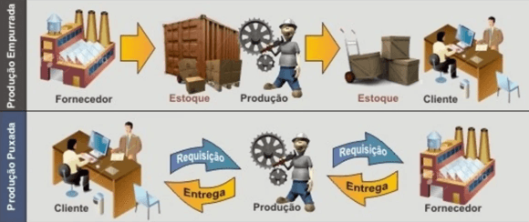
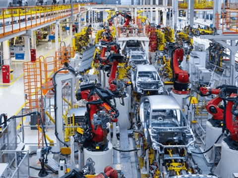
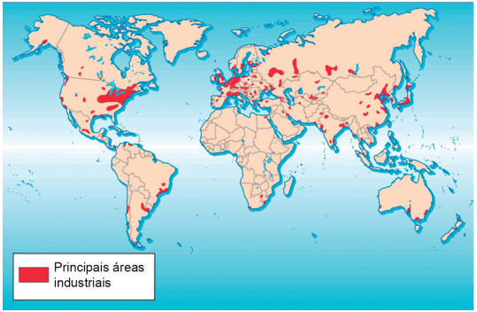
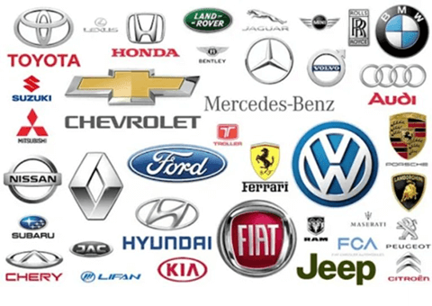
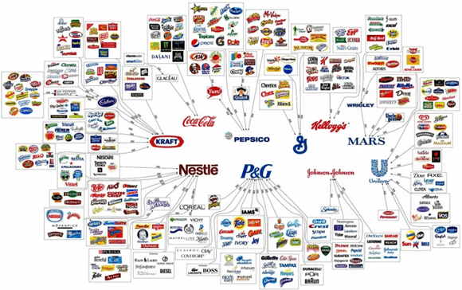
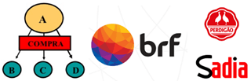
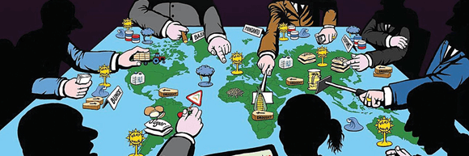
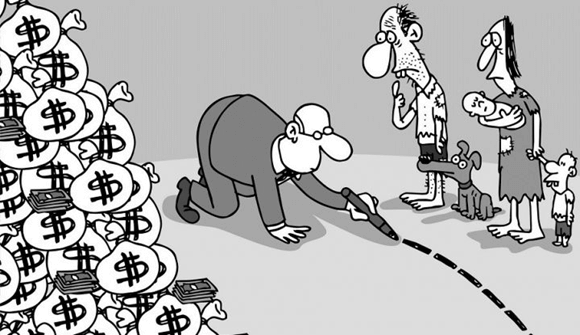
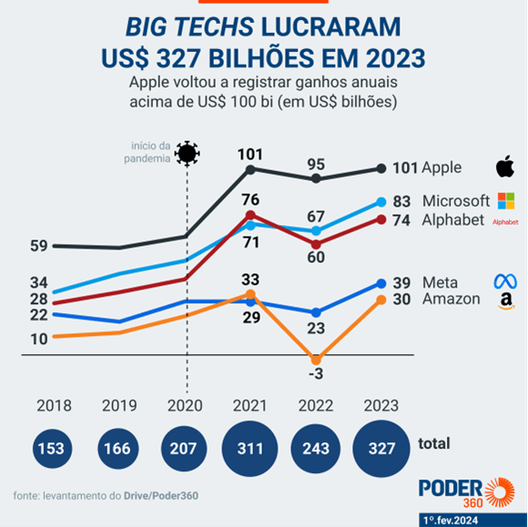

Texto 09 - Industrialização mundial III – Economia globalizada
Conteúdo: Acumulação flexível; Concentração da atividade industrial; Neoliberalismo;
Capitalismo monopolista.
Objetivo: Compreender os novos processos no capitalismo global relacionadas as mudanças na
lógica de produção industrial no atual período.
Digite seu nome
Introdução
Naula passada vimos o surgimento do meio
técnico-científico-informacional, e entendemos como o Fordismo, o Keynesianismo e as multinacionais se
moldaram novas formas das indústrias produzirem no mundo.
Hoje vamos estudar como a economia se tornou global e os fatores para o surgimento de novos modos de
produção, como a acumulação flexível amparada no neoliberalismo que se expandiu pelo globo a partir da
década de 1980.
Questões para serem respondidas no caderno sobre o tema da aula de hoje:
1. O que é a acumulação flexível?
2. Quais são as características da acumulação flexível?
3. Como a acumulação flexível pode impactar os trabalhadores?
4. O que é a concentração da atividade industrial?
5. Dê exemplos de setores onde há concentração da atividade industrial.
6. O que é um conglomerado?
7. Como o neoliberalismo afeta a economia e os serviços públicos?
8. Quais são os principais impactos do capitalismo monopolista?
9. Quais setores são mencionados como exemplos de capitalismo monopolista?
Acumulação flexível
Vamos falar sobre um tema bem importante na economia: a Acumulação Flexível. Esse termo pode parecer
complicado, mas é algo que afeta bastante o jeito como as empresas produzem e como isso influencia o
mercado.
A Acumulação Flexível é um modelo econômico que traz muita flexibilidade na produção. É como se as fábricas
conseguissem se adaptar rapidinho às mudanças do mercado, produzindo só o que é necessário, no momento
certo, sem fazer estoques gigantes.

Fonte: https://www.significados.com.br/
Quando falamos das características desse modelo, vemos que a produção acontece em várias partes, de forma
espalhada, não mais concentrada em um lugar só. Muitas empresas também terceirizam parte do trabalho, ou
seja, contratam outras empresas para fazer algumas etapas do processo. O lado ruim é que isso às vezes acaba
gerando trabalhos precários, com menos direitos para os trabalhadores.
Você pode ver exemplos disso em vários lugares. Na indústria automobilística, por exemplo, as fábricas
conseguem mudar rapidamente de um modelo de carro para outro, seguindo as tendências do mercado. Na
tecnologia, com empresas lançando novos produtos o tempo todo, sempre buscando inovações. E na moda rápida,
aquela que traz as últimas tendências das passarelas para as lojas em um piscar de olhos.

Fonte: pixabay.com.
Mas quais são os impactos disso tudo? Infelizmente, a Acumulação Flexível pode aumentar a desigualdade, já
que muitas vezes os trabalhadores não têm condições justas. Além disso, pode trazer instabilidade, já que as
mudanças rápidas às vezes deixam alguns setores ou empresas para trás. E, por fim, ela pode concentrar a
riqueza em poucas mãos, deixando muita gente de fora dos benefícios.
Teste seu conhecimento
A Acumulação Flexível permite às empresas adaptarem rapidamente sua produção às mudanças do mercado, sem
necessidade de grandes estoques.
Teste seu conhecimento
O que caracteriza a Acumulação Flexível?
Teste seu conhecimento
Na Acumulação Flexível, a terceirização de parte do trabalho sempre garante melhores condições e direitos
para os trabalhadores.
Concentração da atividade industrial
Essa concentração acontece quando a produção industrial fica centralizada em algumas poucas empresas
gigantes. São aquelas que a gente vê todo dia nos noticiários, as que dominam o mercado e às vezes até
parecem ter o controle de tudo!
Isso acaba formando as principais regiões industrias do mundo como o Centro-Leste dos Estados Unidos e
sudeste do Canadá. A Europa Ocidental em países como Grã-Bretanha, França, Alemanhã etc; Japão, China,
Sudeste do Brasil e Argentina, além da Austrália.

Quando olhamos de perto, vemos que essa concentração traz algumas características bem marcantes. Primeiro,
são poucas empresas que mandam na área, formando quase que um clube exclusivo. Elas têm tanto poder que
conseguem controlar os preços e até ditar as regras do mercado. E não podemos esquecer das economias de
escala, que são os benefícios de produzir em grande quantidade, deixando os concorrentes menores para trás.
Para entender melhor, vamos ver alguns exemplos: na indústria
automobilística , essas empresas gigantes que conhecemos são as que dominam o mercado, lançam
modelos novos e fazem a concorrência correr atrás. Na tecnologia, com as grandes marcas que lançam os
smartphones mais esperados do ano. E na energia elétrica, onde algumas empresas têm o controle das fontes de
energia que usamos em casa.
×
Existem grandes conglomerados que controlam várias marcas de carros ao redor do mundo. O Grupo
Stellantis é um dos maiores, formado pela fusão da FCA e PSA, e inclui marcas como Fiat,
Chrysler, Peugeot e Jeep. Outro gigante é o Renault-Nissan-Mitsubishi, que uniu Renault e Nissan
em 1999, posteriormente incluindo a Mitsubishi. O Grupo Volkswagen é outro destaque, sendo
proprietário de marcas como Audi, Porsche, Lamborghini e Bentley. A Ford também faz parte dessa
lista, com suas marcas Ford e Lincoln, anteriormente incluindo Aston Martin, Jaguar e Land
Rover. Por fim, temos o Grupo Tata, da Índia, que adquiriu Jaguar e Land Rover da Ford e manteve
suas operações e prestígio. Esses conglomerados têm grande influência na indústria
automobilística global.

Mas quais são os impactos disso tudo? Infelizmente, a concentração da atividade industrial pode aumentar a
desigualdade, já que essas empresas gigantes muitas vezes não dão oportunidades para as menores. Além disso,
o poder fica muito concentrado em algumas mãos, o que pode influenciar até nas decisões políticas do país.
E não para por aí! Temos também alguns termos que ajudam a entender melhor esse mundo da concentração
industrial. Vamos lá:
Conglomerado: É quando várias empresas diferentes se juntam sob o controle de um
único grupo, formando uma espécie de "império" empresarial.

Fonte:
https://brunoantognolli.wordpress.com
Truste: São acordos entre empresas concorrentes para limitar a competição,
controlando preços e mercado.

Fonte: Descomplica.
Holding: É uma empresa que tem o objetivo de controlar outras empresas, geralmente
por meio da compra de suas ações.
Cartel: Semelhante ao truste, é uma união de empresas do mesmo ramo que se juntam
para controlar a oferta e o preço de um produto.
Dumping: refere-se à prática de uma empresa vender seus produtos em um mercado
estrangeiro a um preço inferior ao praticado no mercado doméstico ou ao custo de produção. Isso pode
ser feito para ganhar participação de mercado, eliminar concorrentes locais ou simplesmente para se
livrar de excesso de estoque.
Joint-venture: É uma parceria entre duas ou mais empresas para realizarem um
projeto específico em conjunto, como uma nova linha de produtos ou a exploração de um mercado novo.
Entender esses conceitos nos ajuda a ter uma visão mais completa de como funciona a concentração da
atividade industrial e seus impactos na nossa sociedade.
Teste seu conhecimento
O que significa concentração da atividade industrial?
Teste seu conhecimento
A concentração da atividade industrial pode ser observada no mercado de smartphones, onde poucas empresas
como Apple, Samsung e Huawei dominam a maior parte das vendas globais.
Neoliberalismo
O Neoliberalismo é uma ideologia econômica que prega o livre mercado, ou seja, menos interferência do Estado
na economia e mais espaço para as empresas se movimentarem. Isso se traduz em privatização de setores antes
controlados pelo governo, desregulamentação das atividades empresariais e um forte enfoque no
individualismo.

Fonte: https://www.ihu.unisinos.br/
Características:
Privatização: Setores como transporte, energia e saúde passam para as mãos de empresas privadas.
Desregulamentação: Redução das regras que as empresas precisam seguir, como normas ambientais e
trabalhistas.
Ênfase no individualismo: Valorização da competição individual e redução do papel do Estado como provedor
de serviços sociais.
Exemplos:
Chile: Após as reformas neoliberais nos anos 70 e 80, o Chile privatizou setores como previdência e
educação, levando a uma maior desigualdade social.
Reino Unido: Sob o governo de Margaret Thatcher nos anos 80, o Reino Unido implementou políticas de
austeridade, cortando gastos sociais e favorecendo o setor privado.
Estados Unidos: Com a desregulamentação do setor financeiro nos anos 90 e 2000, os EUA viram um aumento
na concentração de riqueza e uma crise financeira global em 2008.
Impactos:
Desigualdade: Aumento da disparidade de renda e oportunidades entre ricos e pobres.
Concentração de riqueza: Poucos indivíduos e corporações acumulam a maior parte da riqueza da nação.

Fonte: https://www.pressenza.com
Fragilização dos serviços públicos: Redução na qualidade e acessibilidade de serviços como saúde e
educação, que passam a ser privatizados ou terceirizados.
O Neoliberalismo, com seus princípios de livre mercado e redução do Estado, tem gerado debates intensos
sobre seu impacto na sociedade e na economia dos países ao redor do mundo.
Teste seu conhecimento
O Neoliberalismo defende uma maior intervenção do Estado na economia e na proteção dos serviços públicos.
Teste seu conhecimento
Qual é um dos principais princípios do Neoliberalismo?
O Capitalismo monopolista
O Capitalismo Monopolista impacta diretamente o mercado e as nossas escolhas como consumidores.
Então, o que é esse tal de Capitalismo Monopolista? Basicamente, é quando o poder econômico está concentrado
nas mãos de poucas empresas, que dominam praticamente um setor inteiro. É como se elas fossem as donas da
festa, controlando tudo o que acontece no mercado.
E quais são as características desse cenário? Primeiro, temos o controle do mercado. Isso significa que
essas empresas têm o poder de ditar as regras, os preços e até mesmo o que é produzido. Além disso, elas
conseguem suprimir a concorrência, ou seja, não deixam espaço para outras empresas competirem de igual para
igual. E, por fim, há a exploração de recursos, onde essas gigantes muitas vezes buscam lucro máximo, sem se
importar muito com o impacto social ou ambiental.

Agora, vamos ver alguns exemplos para entender melhor. Quem aqui já ouviu falar das gigantes tecnológicas?
Estamos falando de empresas como Google, Apple, Facebook e Amazon, que têm um domínio quase absoluto em seus
respectivos campos. Outro setor que também é bastante monopolizado é o de telecomunicações, com empresas que
controlam desde a internet que usamos até as nossas ligações. E não podemos esquecer do setor farmacêutico,
onde algumas poucas empresas têm um controle enorme sobre os medicamentos que consumimos.
Em 2023, as gigantes da tecnologia arrebentaram: juntas, faturaram incríveis US$ 1.59 trilhão! Quem liderou
o ranking foi a Amazon, que bombou com um total de US$ 575 bilhões. Mas a Apple deu uma escorregada, foi a
única que teve uma receita menor em comparação com o ano passado: US$ 344 bilhões em 2023 contra US$ 388
bilhões em 2022. Loucura, né?
Mas por que isso tudo importa? Bem, os impactos são muitos. Primeiro, a desigualdade. Com essas empresas tão
poderosas, fica difícil para as pequenas e médias empresas competirem, o que pode aumentar as diferenças
econômicas entre as pessoas. Além disso, a gente acaba com menos opções de escolha, porque tudo acaba sendo
ditado por esses gigantes. E, por fim, a influência política. Com tanto poder econômico, essas empresas
também têm voz nas decisões políticas, o que pode afetar diretamente as políticas públicas.
Teste seu conhecimento
O Capitalismo Monopolista é caracterizado pela diversidade de empresas em um setor, promovendo ampla
concorrência e inovação.
Teste seu conhecimento
Qual setor é conhecido por ter uma forte presença de empresas monopolistas?
Teste seu conhecimento
Quais são os impactos do Capitalismo Monopolista?
Reforce seu conhecimento
Selecione abaixo os conceitos com seu pares correspondentes sobre os tópicos estudados na aula
de hoje:
Acumulação Flexível
Produção Adaptativa
Concentração Industrial
Economias de Escala
Neoliberalismo
Privatização
Capitalismo Monopolista
Controle de Mercado
Desigualdade Social
Concentração de Riqueza
Gigantes Tecnológicas
Big Techs
Não existe pergunta boba! A Ciência é feita de perguntas!
P:
Qual foi o impacto da acumulação flexível na organização do trabalho?
R: A acumulação flexível trouxe mudanças significativas na organização do
trabalho,
como a fragmentação das atividades produtivas, o uso intensivo de tecnologia e a precarização das condições
de
trabalho.
P:
Como a concentração da atividade industrial afeta a competição entre empresas?
R: A concentração da atividade industrial pode levar à formação de
monopólios
e oligopólios,
reduzindo a competição e limitando as opções disponíveis para os consumidores. Isso pode resultar em preços
mais
altos e menor qualidade dos produtos.
P:
Qual a diferença entre monopólio e oligopólio?
R: O monopólio e o oligopólio são dois tipos de estruturas de mercado.
No monopólio, apenas uma empresa controla a oferta de um determinado produto ou serviço, não tendo
concorrentes
significativos.
Já no oligopólio, algumas poucas empresas dominam o mercado, o que pode resultar em um alto grau de
interdependência entre elas e impactar os preços e a competição.
SANTOS, Milton. A Natureza do Espaço: técnica e tempo, razão e emoção. São Paulo: EDUSP,
2002.
VESENTINI, José William. Geografia: o mundo em transição. Ensino médio. 2.
ed. – São
Paulo: Ática, 2013.
VOGLER, Christopher. A jornada do escritor: estruturas míticas para escritores.
Tradução de Ana Maria Machado. 2.ed. Rio de Janeiro: Nova Fronteira, 2006.
SKOLNICK, Evan. Video game storytelling: what every developer needs to know about
narrative techniques.New Yoirk: Watson-Guptill, 2014.